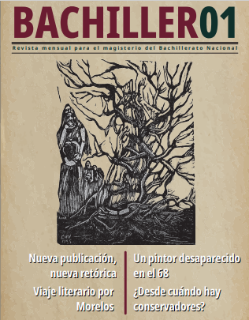
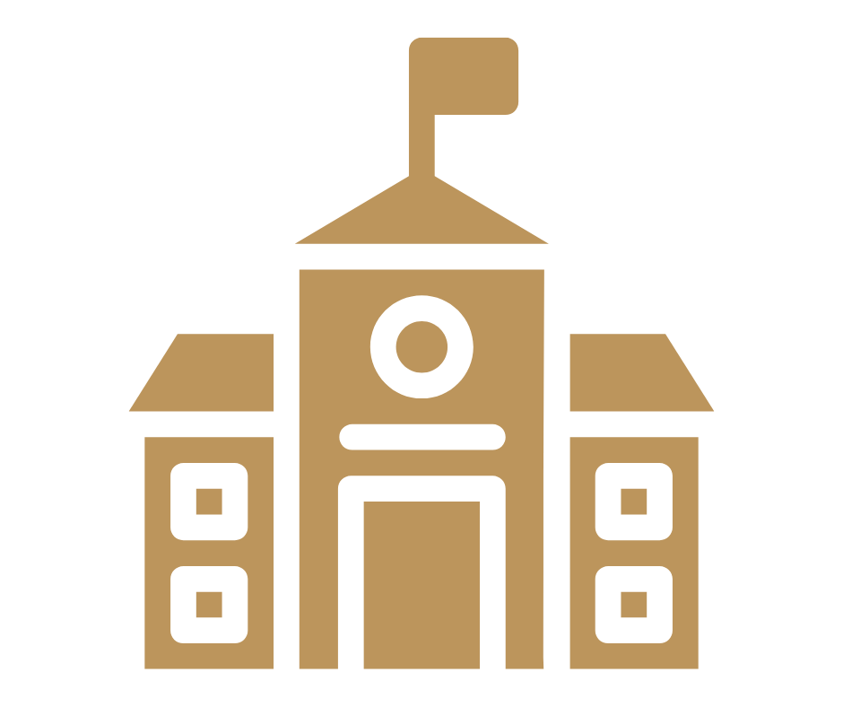
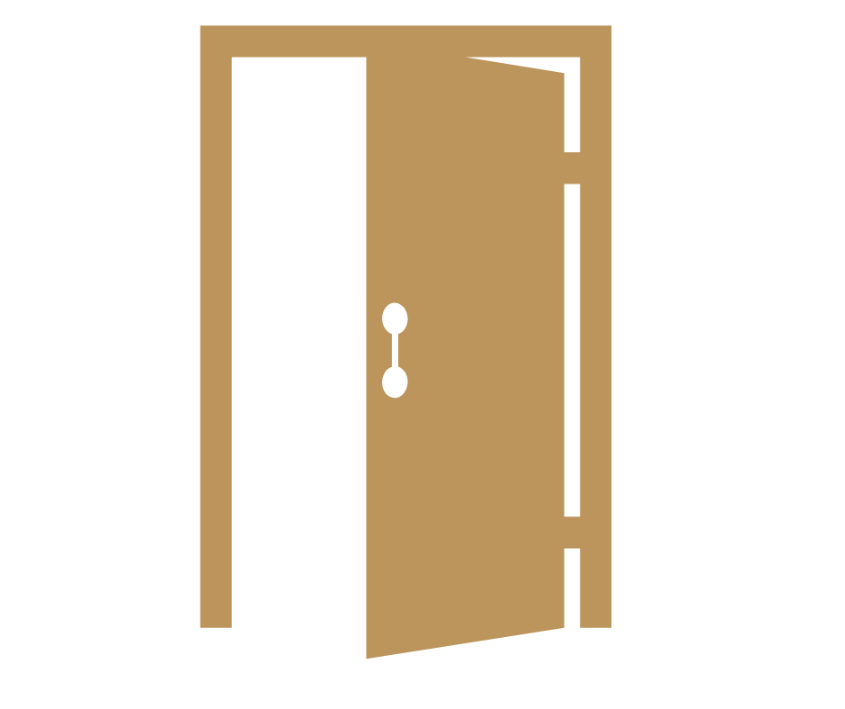
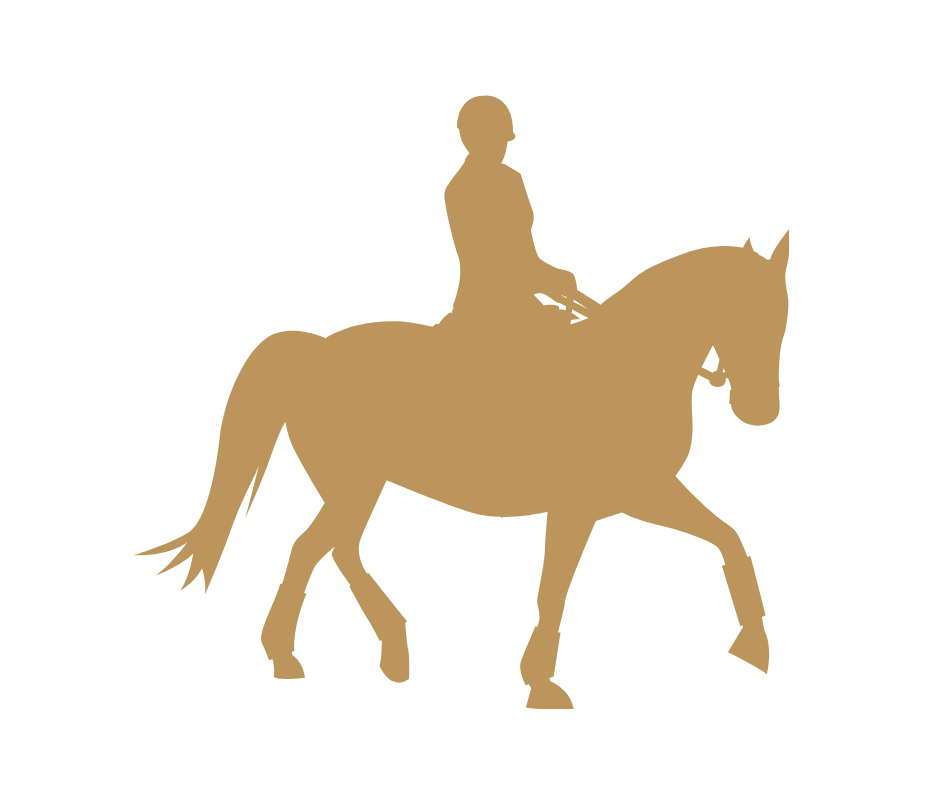

Revista mensual con recursos, ideas y contenidos para
fortalecer la
práctica docente en la Educación Media
Superior.

Comentarios de Nuestras y Nuestros Lectores
En esta sección conocerás a la comunidad Bachiller.
Historias, observaciones y textos que nos envian quienes nos leen.
Escribenos
bachiller@sems.gob.mx
Consulta por Sección
Todos los números publicados de Bachiller los puedes encontrar organizados por sección en este espacio. Accede fácilmente a los contenidos de tu interés, sin importar el número o la edición. Elige la sección que buscas y encuentra artículos, materiales y recursos agrupados temáticamente.

Editorial
La visión de Bachiller, nuestra revista mensual dedicada a fortalecer la lectura en la Educación Media Superior. Un espacio para escribir, pensar y leer desde la pluralidad.


Aula abierta
Reflexiones literarias y sugerencias lectoras para la comunidad docente y estudiantil. Herramientas útiles para integrar la lectura al aula y crear visiones críticas de nuestro mundo.


Viaje literario por México
Un recorrido lector por las entidades del país. Cultura, historia y literatura dialogan desde cada estado para enriquecer nuestra mirada y abrir nuevos horizontes.
Escaparate: la Voz de la comunicación
La comunidad docente y estudiantil comparte experiencias, impresiones y estrategias lectoras que fortalecen el vínculo entre la escuela, la lectura y la comunidad, dentro y fuera del aula.

De par en par la ventana
Curiosidades, datos, lecturas, arte y pensamiento. Todo lo que se cuela por la ventana del asombro y el conocimiento. Una sección para mentes inquietas.

¿Qué leer?
Recomendaciones editoriales recientes para una lectura crítica y gozosa. Libros que invitan a leer por gusto.
Columnas
Artículos y colaboraciones de interés general. Miradas diversas que enriquecen el diálogo sobre la lectura, la docencia, la literatura, la cultura y el arte.

El autores del mes
Entrevistas y semblanzas con figuras clave de la cultura. Conversemos con quienes escriben, editan, traducen y promueven el pensamiento crítico en México y el mundo.
Cinedebate
Películas que invitan a pensar. Una selección mensual de cine comentado para promover la reflexión, el diálogo y el análisis colectivo en el aula.

Faro de papel
Videocolumnas sobre poesía, a cargo de Luis Flores Romero (Lufloro Panadero).
Reflexionemos sobre métrica ymetáforas; versos e imágenes poéticas; poetas,
poemas, y todo lo relacionado con la lírica.

Vinagrillo
El vinagrillo es un arácnido de zonas calientes y húmedas, que vive debajo de las piedras. Y es también nuestro suplemento literario, que presenta cada mes textos de todo tipo, hallados en sus excursiones.
Registro de ISSN en trámite